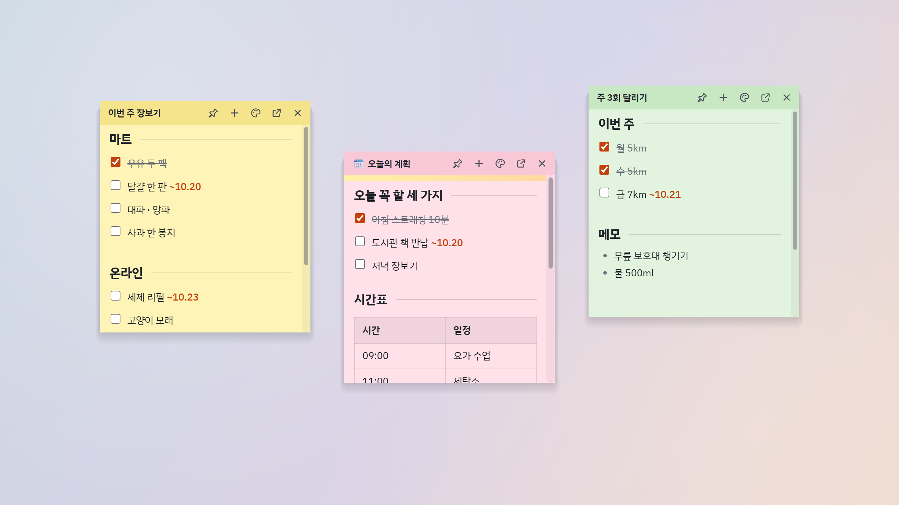

메모를 스티커로 띄웁니다
- 띄울 메모를 엽니다. 위쪽 ⋯ 옆의 핀 모양 단추를 누르거나 Ctrl+Shift+P 를 누릅니다.
- 작은 창(처음 300×320)이 바탕화면에 뜹니다. 작업 표시줄에는 나타나지 않습니다.
- 맨 윗줄을 끌면 옮기고, 가장자리를 끌면 크기가 바뀝니다. 다른 스티커나 화면 가장자리 가까이에 놓으면 달라붙습니다.
이미 떠 있는 메모에서 같은 단추를 누르면 그 스티커가 앞으로 나옵니다. 아직 저장하지 않은 빈 메모도 바로 저장해서 띄웁니다.

스티커 맨 윗줄에서 할 수 있는 것
- 제목을 누르면 그 자리에서 이름을 고칩니다. 옮길 때는 제목 옆 빈 곳을 잡습니다.
- + 는 새 스티커를 바로 만듭니다. 누른 스티커 바로 아래(모자라면 옆)에 놓이고 본 창 목록에도 들어갑니다.
- 넣기 는 할 일, 목록, 표, 마인드맵, 소제목, 인용을 넣습니다.
- 색 단추로 그 스티커만 색을 바꿉니다. 흰색, 노랑, 분홍, 초록, 하늘, 보라, 회색이 있습니다. 설정에서 모든 스티커의 기본 색을 정할 수도 있습니다.
- 항상 위 핀: 켜면 다른 창에 가려지지 않습니다. 새 스티커는 꺼진 채로 시작합니다. 가려진 스티커는 시계 옆 아이콘 메뉴의 "스티커 모두 앞으로"로 찾습니다.
- 본 창에서 열기 와 떼기(✕).
알아 둘 것
- 스티커와 본 창은 같은 메모를 봅니다. 한쪽에서 저장하면 다른 쪽이 바로 따라 바뀝니다. 두 곳에서 동시에 고치면 나중에 저장한 쪽이 남습니다.
- 본 창을 닫아도(시계 옆으로 숨겨도) 스티커는 남고, 위치와 크기를 기억했다가 Cluey 를 켤 때 다시 띄웁니다.
- 아무것도 쓰지 않은 스티커를 ✕ 로 떼면 그 빈 메모도 같이 지워집니다.
- 잠근 메모는 스티커로 띄울 수 없습니다.
- 스티커마다 작은 화면이 하나씩 필요해서, 많이 띄울수록 메모리를 조금씩 더 씁니다.